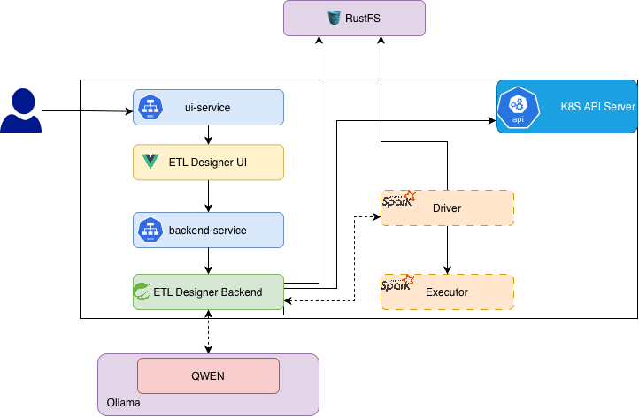

PySpark ETL Made Easy: AI-Generated Pipelines from Design to Runtime
Built an AI-powered visual ETL platform that empowers non-technical users to design data pipelines without code, automatically generating production-ready PySpark scripts and deploying jobs directly to Kubernetes (K8s) in one click—eliminating engineering bottlenecks and simplifying spark-submit orchestration.
PySpark
AI
Docker
Kubernetes
Java
ETL
Read Morearrow_outward